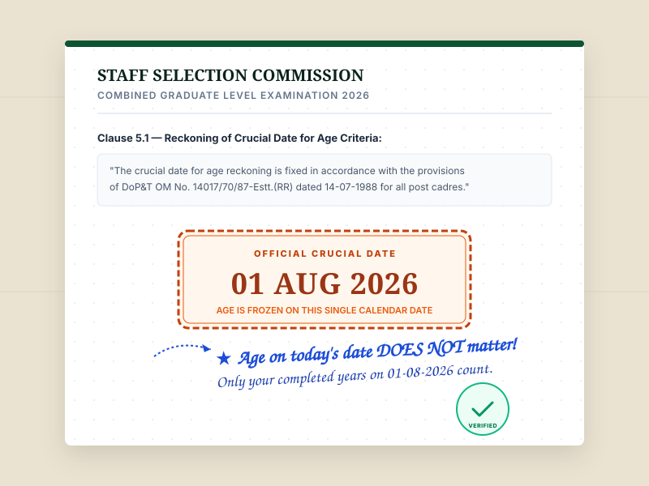
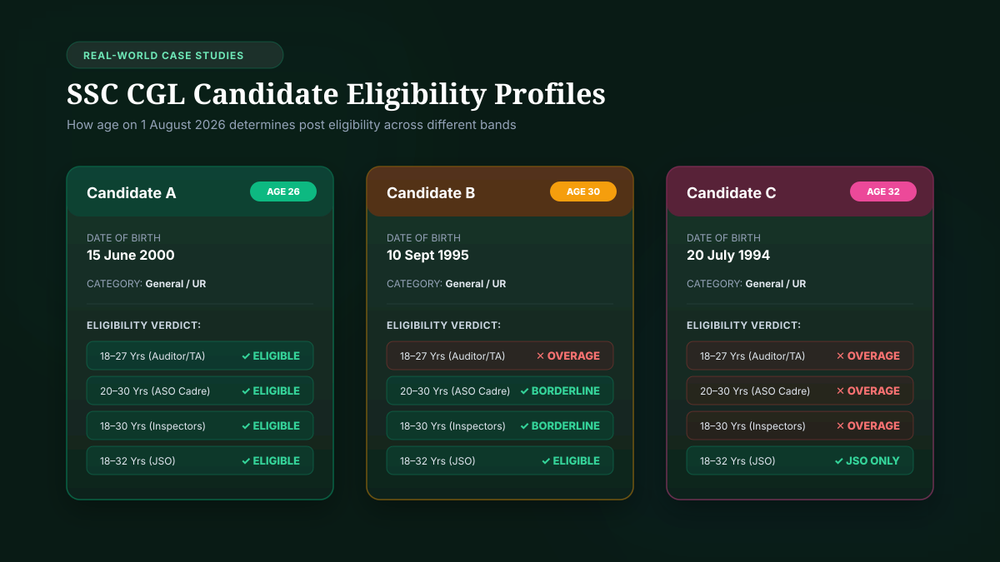

SSC CGL Age Limit 2026 at a Glance
The Staff Selection Commission does not operate with a single universal maximum age limit. Instead, vacancies are structured across four statutory age brackets:
| Age Band | Minimum Age | Maximum Base Age (UR) | Representative Cadres |
|---|---|---|---|
| Band 1 | 18 Years | 27 Years | Auditor (CAG/CGDA), Accountant, Tax Assistant (CBDT/CBIC), UDC |
| Band 2 | 20 Years | 30 Years | Assistant Section Officer (CSS, MEA, IB, Railway), Sub-Inspector (CBI) |
| Band 3 | 18 Years | 30 Years | Inspector (Central Excise, Income Tax, Preventive Officer, Examiner) |
| Band 4 | 18 Years | 32 Years | Junior Statistical Officer (Statistics Cadre, MoSPI) |
Key Takeaway: The applicable age band depends on the specific SSC CGL post. Therefore, being within one age band does not automatically mean that every SSC CGL post is available to you.
SSC CGL Age Limit Is Different for Different Posts
Unlike recruitment tests that impose a uniform age barrier (such as state PCS exams capping general applicants at 35 or 40), the SSC CGL notification coordinates service recruitment rules for more than 30 separate ministries and executive departments. The Department of Personnel and Training (DoPT) formulates these limits based on operational demands:
- Clerical & Ministerial Support Roles (18–27 years): Posts like Tax Assistant in CBDT/CBIC and Auditor in the Comptroller and Auditor General (CAG) cap entry at 27 for General category candidates because they serve as departmental feeder lines for faster promotional ladders.
- Secretariat Administrative Cadres (20–30 years): High-responsibility administrative posts such as Assistant Section Officer (ASO) in Central Secretariat Service (CSS), Intelligence Bureau (IB), and Ministry of External Affairs (MEA) require an elevated entry threshold of 20 years.
- Executive Enforcement Cadres (18–30 years): Investigatory posts like Inspector of Income Tax, Inspector Central Excise, Customs Examiner, and Assistant Enforcement Officer in the Enforcement Directorate (ED) span ages 18 to 30.
- Specialized Technical Statistics (18–32 years): Junior Statistical Officer (JSO) provides the broadest age bracket (up to 32 years), though it requires mandatory educational specialization (Statistics or 60% in 12th Mathematics).
SSC CGL Post-Wise Age Limit Directory 2026
Below is the searchable post directory populated directly from the current official notification. Use the live search bar or filter buttons to inspect age limits, pay levels, and cadre classifications:
| SSC CGL Post | Ministry / Department | Classification | Age Limit | Min | Max (UR) |
|---|---|---|---|---|---|
| Inspector of Income Tax | Central Board of Direct Taxes (CBDT) | Group B | 18–30 | 18 | 30 |
| Inspector (Central Excise) | Central Board of Indirect Taxes & Customs (CBIC) | Group B | 18–30 | 18 | 30 |
| Inspector (Preventive Officer) | CBIC (Customs) | Group B | 18–30 | 18 | 30 |
| Inspector (Examiner) | CBIC (Customs Appraisement) | Group B | 18–30 | 18 | 30 |
| Assistant Enforcement Officer | Directorate of Enforcement (ED) | Group B | 18–30 | 18 | 30 |
| Sub-Inspector | Central Bureau of Investigation (CBI) | Group B | 20–30 | 20 | 30 |
| Sub-Inspector | National Investigation Agency (NIA) | Group B | 18–30 | 18 | 30 |
| Assistant Section Officer (ASO) | Central Secretariat Service (CSS, DoPT) | Group B | 20–30 | 20 | 30 |
| Assistant Section Officer (ASO) | Ministry of External Affairs (MEA) | Group B | 20–30 | 20 | 30 |
| Assistant Section Officer (ASO) | Intelligence Bureau (MHA) | Group B | 18–30 | 18 | 30 |
| Assistant Section Officer (ASO) | Ministry of Railways | Group B | 20–30 | 20 | 30 |
| Assistant Section Officer (ASO) | Armed Forces Headquarters (AFHQ) | Group B | 20–30 | 20 | 30 |
| Junior Statistical Officer (JSO) | Ministry of Statistics & Programme Implementation | Group B | 18–32 | 18 | 32 |
| Auditor | Comptroller & Auditor General of India (CAG) | Group C | 18–27 | 18 | 27 |
| Auditor | Controller General of Defence Accounts (CGDA) | Group C | 18–27 | 18 | 27 |
| Accountant / Junior Accountant | Offices under CAG & CGA | Group C | 18–27 | 18 | 27 |
| Tax Assistant | Central Board of Direct Taxes (CBDT) | Group C | 18–27 | 18 | 27 |
| Tax Assistant | Central Board of Indirect Taxes & Customs (CBIC) | Group C | 18–27 | 18 | 27 |
| Upper Division Clerk (UDC) / SSA | Central Government Ministries / Offices | Group C | 18–27 | 18 | 27 |
Visualizing Cadre Groups: Interactive Post Cards
Rather than relying on static charts, explore these interactive HTML post cards to inspect key cadre boundaries and launch targeted eligibility checks:
Inspector Posts
Income Tax, Central Excise, Customs Preventive Officer & Examiner.
Assistant Section Officer
ASO in CSS, MEA, Intelligence Bureau & Railway Board.
Auditor & Accountant
Audit and accounts ledger verification in CAG, CGA & CGDA.
Junior Statistical Officer
MoSPI statistics wing. Widest age window under graduate level.
What Is the Crucial Date? SSC CGL Age Calculation Date
Your age eligibility is not judged by the day you fill out the application or the day you sit for Tier-I. The Commission freezes eligibility onto a single calendar pivot:
Governed under DoPT Office Memorandum No. 14017/70/87-Estt.(RR). For examinations held in the second half of the year, 1 August is the mandatory reckoning date.

Why the Age Reckoning Date Matters: Worked Examples
Why can't you simply check your age today? Because your completed years on 1 August 2026 can be entirely different from your calendar age today:
Case Study: The 1 August Boundary
Consider an aspirant whose date of birth is 15 September 1998 applying for a 30-year post:
- Current Age: Candidate appears to be 29 or 30 depending on today's date.
- Age on 1 August 2026: Exactly 27 years, 10 months, and 17 days.
- Verdict: The candidate is fully eligible for both 18–30 inspector posts and 18–27 auditor posts!
Conversely, a candidate born on 15 July 1996 turns 30 on 15 July 2026. By 1 August 2026, they are 30 years and 17 days old. Under the Unreserved category, they are overage by 17 days and disqualified from all 30-year posts.
Senior Faculty Study Desk Notes
Experienced civil service mentors summarize SSC CGL eligibility into a cardinal principle: "Check the POST first, then check your AGE."

Assuming that every graduate-level post permits candidates up to age 32 is the single most common post-preference error. As the study worksheet highlights, only JSO reaches 32 years; all standard officer and inspector posts terminate at 30 years.
SSC CGL Upper Age Relaxation: Category Rules
The official 2026 notification outlines statutory upper age relaxations for reserved categories in accordance with Central Government civil service rules:
| Category | Upper-Age Relaxation | Effective Max (30-Yr Post) | Effective Max (32-Yr JSO) |
|---|---|---|---|
| SC / ST | 5 Years | 35 Years | 37 Years |
| OBC (Non-Creamy Layer) | 3 Years | 33 Years | 35 Years |
| PwBD (Unreserved) | 10 Years | 40 Years | 42 Years |
| PwBD (OBC) | 13 Years | 43 Years | 45 Years |
| PwBD (SC / ST) | 15 Years | 45 Years | 47 Years |
| Ex-Servicemen (ESM) | 3 Years after deduction of military service from actual age | Formula-Based | Formula-Based |
| Defence Personnel (Disabled) | 3 Years (8 years for SC/ST) | 33 Years | 35 Years |
Note: Age relaxation is category- and rule-specific and is subject to the conditions in the notification. For OBC candidates, the Non-Creamy Layer certificate must be valid for the applicable financial year.
Interactive Age Relaxation Calculator
Test your relaxed upper age boundary dynamically by selecting your post base limit and reservation category:
⚠️ Notice: Subject to the post, vacancy, category eligibility, and conditions in the applicable notification.
SSC CGL DOB Eligibility: Eligible Date of Birth Ranges
In the official notification, age bands are formally codified into exact date of birth boundaries:
| Age Limit Band | Born Not Earlier Than | Born Not Later Than | Total Eligible Span |
|---|---|---|---|
| 18–27 Years | 02 August 1999 | 01 August 2008 | 9 Calendar Years |
| 20–30 Years | 02 August 1996 | 01 August 2006 | 10 Calendar Years |
| 18–30 Years | 02 August 1996 | 01 August 2008 | 12 Calendar Years |
| 18–32 Years | 02 August 1994 | 01 August 2008 | 14 Calendar Years |
For candidates born on exactly 01 August 1996 applying for an 18–30 post, they turn 30 on 1 August 2026 and are on the exact outer boundary of eligibility. Candidates born on 02 August 1996 are 29 years and 364 days old on the crucial date, placing them safely within the corridor.
Which Date of Birth Is Accepted for SSC CGL?
The 2026 notification explicitly states that the Date of Birth recorded in your Matriculation / Secondary Examination Certificate is the sole document accepted for determining age. No subsequent requests for changes will be considered.
If your Aadhaar Card or municipal birth certificate shows a different date, you must resolve the discrepancy with your state education board prior to applying, because SSC will only honor the 10th marksheet.
Common SSC CGL Age Eligibility Mistakes
Aspirants routinely fall prey to six common miscalculations during registration:
Using Today's Age
Calculating current calendar age instead of age on the notification's crucial date.
Assuming 32 for All
Assuming 32 is the maximum for everyone when post-wise bands differ.
Ignoring Relaxation
Forgetting that eligible OBC (+3y) or SC/ST (+5y) candidates qualify for extensions.
Using Non-10th DOB
Submitting an Aadhaar DOB that diverges from the matriculation certificate.
Checking Only Age
Ignoring post-specific education requirements (such as Statistics for JSO).
Assuming Result is Official
Treating third-party calculations as official approval without verifying notification rules.
Eligibility Mistake Detector: Before You Apply
Verify all four checkpoints to confirm compliance:
Real-World Candidate Eligibility Examples
How does eligibility change across real applicant age profiles? Review these three illustrative cases:

- Candidate A (DOB: 15 June 2000, Age on 1 Aug 2026: 26): Fully within the standard age band for 18–27, 20–30, 18–30, and 18–32 posts. Can apply for any cadre.
- Candidate B (DOB: 10 September 1995, Age on 1 Aug 2026: 30): Disqualified from 18–27 auditor/tax assistant cadres under the General category. Eligible for 18–30 inspectors, 20–30 ASO, and 18–32 JSO.
- Candidate C (DOB: 20 July 1994, Age on 1 Aug 2026: 32): Exceeds 27 and 30-year limits. Under the General category, eligible only for JSO (18–32) if holding Statistics qualifications. However, if Candidate C belongs to OBC (+3y, max 33) or SC/ST (+5y, max 35), they are eligible for all 30-year posts.
"Can I Apply?" Age Band Decision Tool
Input your completed age as of 1 August 2026 to immediately review which post bands are accessible to you under Unreserved (UR) criteria:
Frequently Asked Questions
Answers to the most frequent inquiries from candidates preparing for the SSC CGL examination:
SSC CGL Age Eligibility Knowledge Base
Explore our expanding cluster of competitive examination age resources: